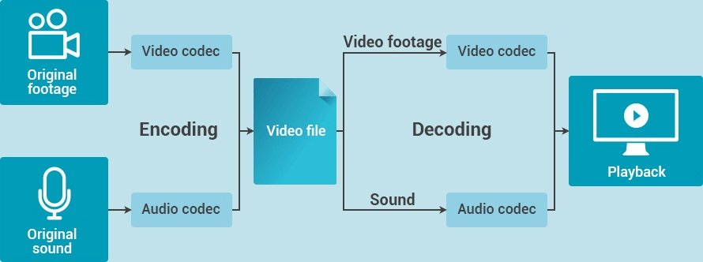

Transmitiendo la información de video
¿Alguna vez les ha pasado que recibieron un archivo pero su computadora no podía abrirlo? Normalmente esto ocurre cuando no se dispone del software o del códec adecuado.
Como hemos visto en el capítulo destinado a sonido, las computadoras trabajan sobre unidades cuantitativas de información, y para ello, realizan operaciones matemáticas tanto para almacenarlas, como para procesarlas y transmitirlas. En el caso del audio y el video, las operaciones "escritura y lectura" de esta información se realiza a partir de codecs (palabra compuesta por por los términos codificación decodificación).

Los códecs son pequeños programas (software) que contienen las instrucciones para realizar las operaciones secuenciales para comprimir y descomprimir las imágenes. Como vimos, existen distintos tipos de codecs y si bien existen algunos estándares, puede ocurrir que no contemos con el adecuado.
Para ello podemos acudir a un software de transcodificación, como Handbrake, que veremos en una clase más avanzada.